Nesse tutorial vamos criar e codificar um bot para o Discord.
Vamos fazer ele exibir
informaçoes que vão ser puxadas diretamente de uma api externa. E vamos apenas
usar
Node JS é a Api hgbrasil.
você vai aprender a consumir uma api com Node JS, Aprendera a manipular jsons,
é tambem a como utilizar modulos do Node JS
Vamos começar, mas antes você precisa ter as seguintes ferramentas:
Bom agora vamos colocar a mão na massa e criar nosso Bot.
Primeiro: Vamos entrar no site do
discord para developers
você deve ver esse painel.
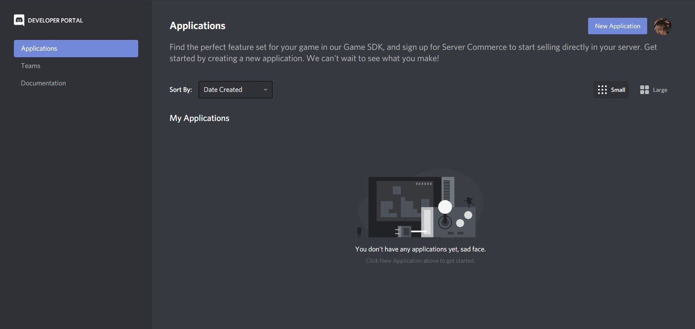
Em seguida clique em "New Application", Que esta localizado no canto superior
direito da pagina.
Ira aparecer a seguinte mensagem:
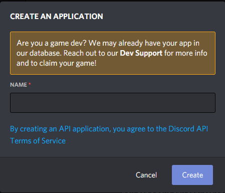
No campo escrito "Name" Insira o nome da sua aplicação, Não se preocupe o nome da aplicação
não sera o nome do seu Bot. Depois de inserir um nome você deve clicar em
"Create" Depois de clicar deve aparecer o seguinte painel:
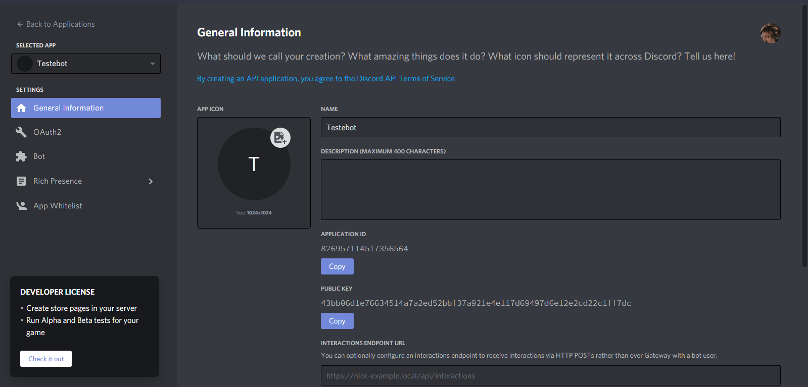
Pronto criamos nossa aplicação agora vamos de fato criar nosso Bot.
E pra isso Vamos clicar em "Bot" na barra de navegação a esquerda da pagina.
Depois de clicar ira aparecer este painel
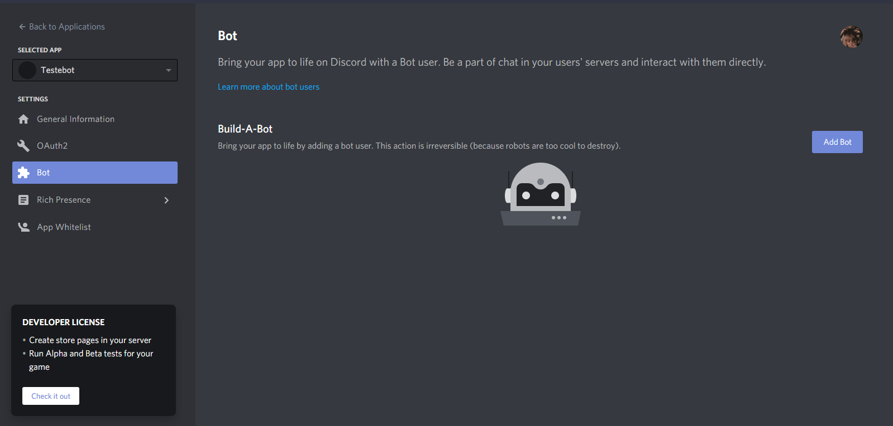
Depois vamos clicar em "Add Bot" no canto direito da pagina, Em seguida ira aparecer uma mensagem
Clique em "Yes, do it", você sera redirecionado para o seguinte painel
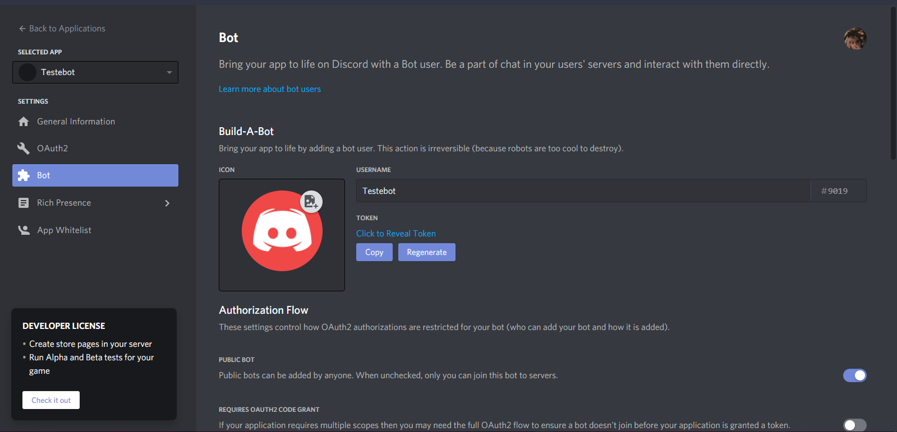
Aqui você ja pode customizar seu Bot adicionando um nome é foto.
você deve clicar em "Click to Reveal Token", do lado da imagem do seu bot, Depois de
clicado ira aparecer uma sequencia de letras e numeros.
Guarde pois vamos precisar disso mais tarde.
Vamos navegar ate a aba "OAuth2" na barra de navegação a esquerda.
Ja na aba "OAuth2"
Vamos selecionar a Opção "Bot" Logo em seguida ira aparecer um novo painel abaixo, selecione tambem
a opção "Administrator"
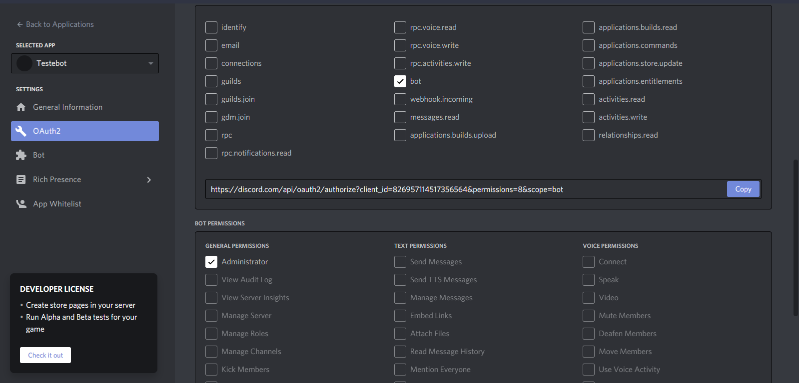
Depois disso sera gerado um convite para o Bot, Copie e cole no seu navegador.
Agora você ira adicionar o Bot no seu Servidor, Depois de ter colado o link ira aparecer o seguinte painel:
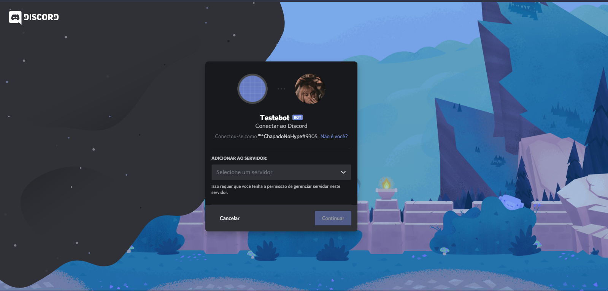
Clique em "Selecione um servidor", então escolha o servidor que o Bot devera ser adicionado.
Depois de selecionar o servidor, verifique se o Bot foi adicionado.
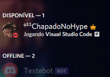
Se Tudo deu certo vamos Começar a codificar nosso Bot agora.
Primeiro vamos criar uma pasta para colocar nosso projeto.
Depois vamos entrar na pasta criada, depois crie um arquivo chamado "config.json".
O config.json sera usado para armazenar nosso "Bot Token" e nosso "prefix".
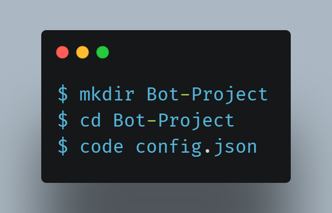
O que é "Bot Token" ? Bot token e o codigo que vamos usar para o Discord nos Identificar
é nosso bot ter acesso ao Discord.
O que é Prefix é tudo que vem antes do comando do Bot.
Assim quando a messagem do autor estiver com o prefixo o Bot entendera que é para ele
executar uma
ação.
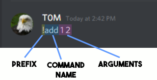
Ja no arquivo "config.json" vamos definir o "Token" do nosso Bot
que pegamos no primeiro passo
E tambem vamos definir o prefixo do nosso Bot
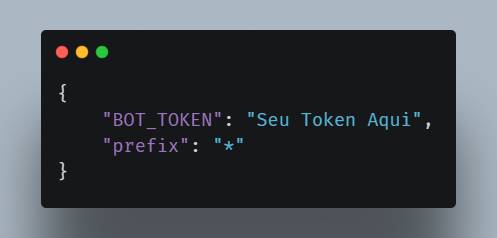
Agora vamos criar outro arquivo chamado "index.js", Onde vamos guarda a parte
principal do nosso codigo.
Agora vamos instalar todas as dependencias do Node para esse projeto.
Com o terminal aberto digite o comando "npm init -y"
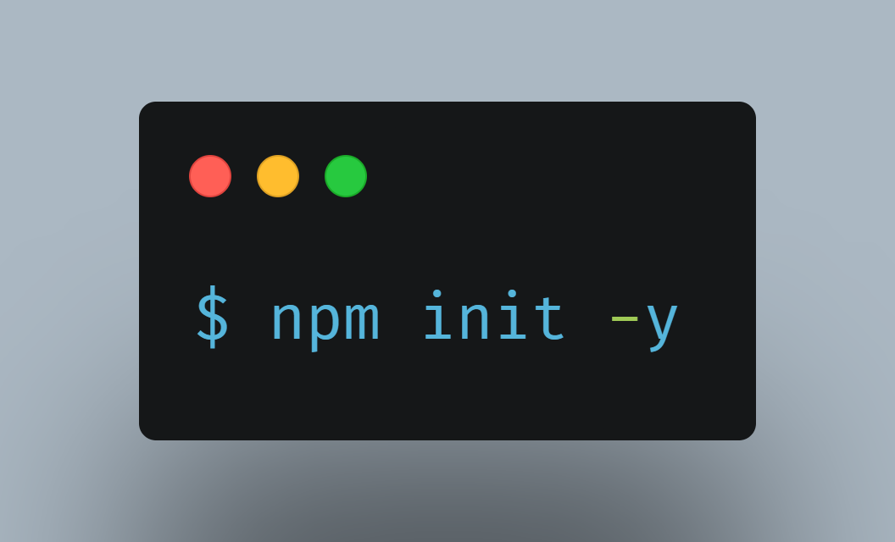
Depois de excutar esses comandos você vera que se criou um arquivo chamado
"package.json".
Nele ficara armazenado todas as configurações do nosso projeto.
Agora vamos instalar o modulos necessarios para execução do nosso projeto.
No terminal digite:
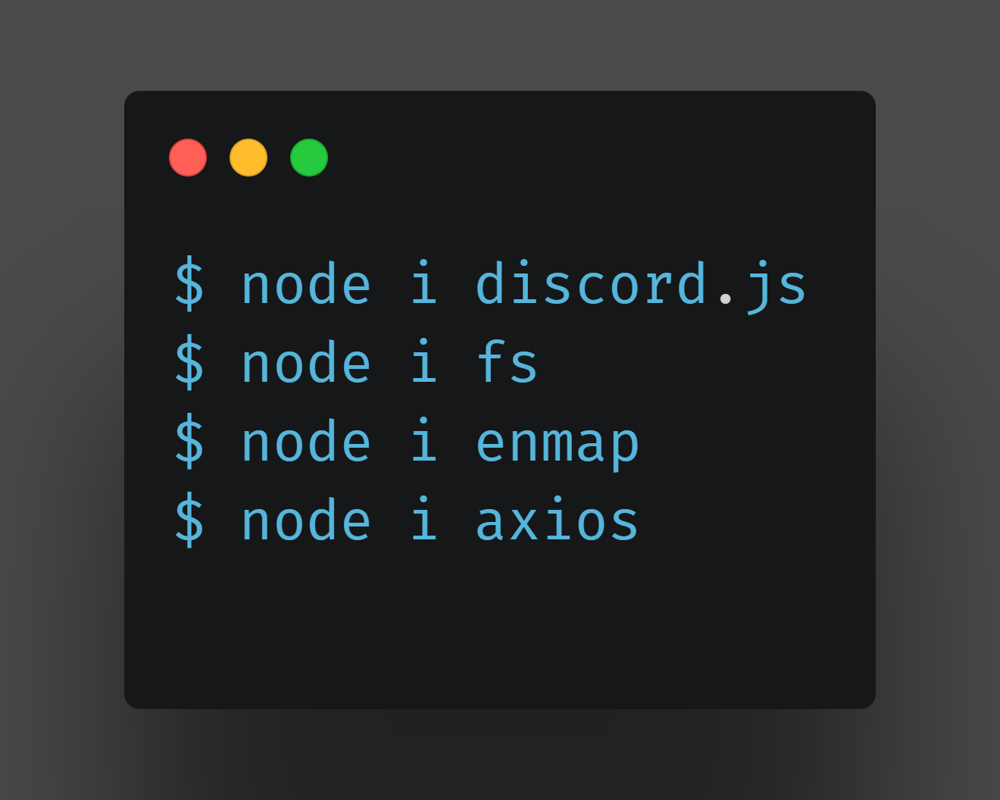
Depois de executar esses comandos ja estamos prontos para Começar a codar.
Abra o arquivo "index.js", vamos agora fazer os "requires" dos modulos que instalamos.
E tambem vamos chamar o nosso Token e prefixo que colocamos no "config.json"
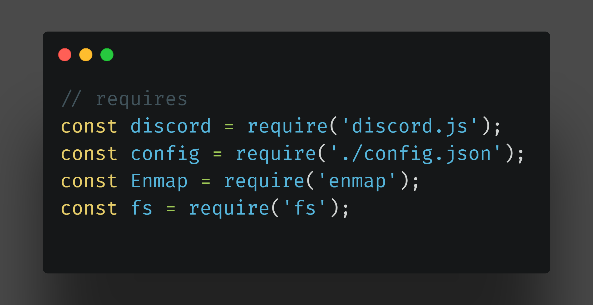
Depois de feito, vamos "chamar" o nosso Bot criando um constante e atribuindo"new discord.Client();"
tambem vamos atribuir "bot.config = config."
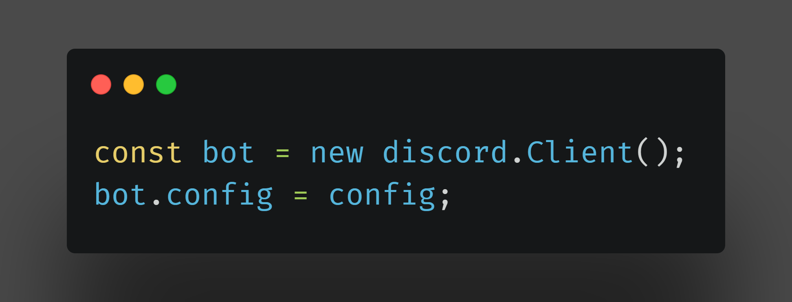
Depois de feito, agora vamos criar uma pasta no nosso projeto chamada
"events".
Nela ficara armazenado os eventos do nosso Bot
Agora vamos criar um arquivo chamado "message.js", Nele vamos colocar os seguintes codigos
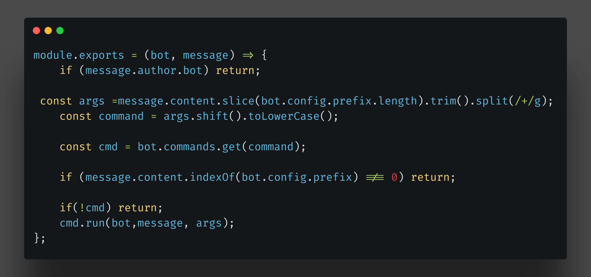
O que esse codigo faz ?, Ele primeiro exporta esse modulo
Depois faz uma verificação caso o autor da mensagem seja um outro bot ele ignora.
Ele tambem verifica se a mensagem contem o prefixo, alem de outras coisas um pouco
mais tecnicas para o bot conseguir mandar a mensagem.
Depois de escrever esse codigo voltamos para o index onde vamos agora chamar esse evento.
Ja no index vamos digitar os seguintes codigos:
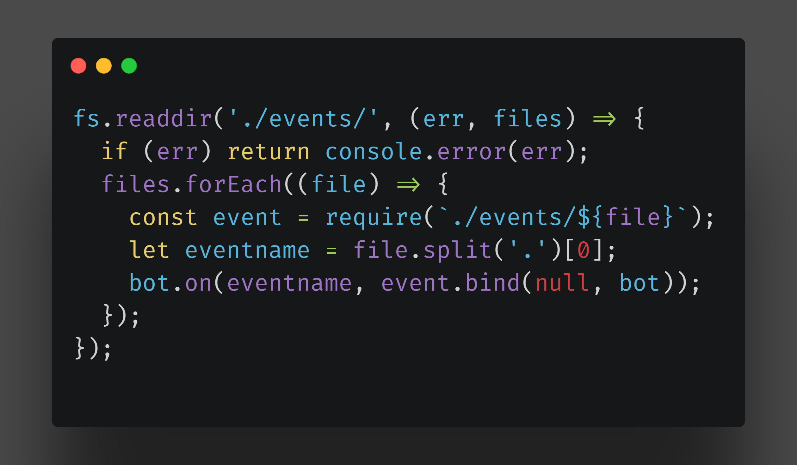
O que esse codigo faz ? Ele primeiro le o diretorio "events"
Depois passamos uma função com dois parametros (err, file) Se tiver algum erro ele retorna.
Depois criamos uma constante pegando os arquivos dentro de "events"
E por fim ao bot ser ligado ele chama o nosso evento.
Agora vamos criar uma pasta chamada "commands", dentro dela vamos criar o arquivo bitcoin.js
Agora vamos entrar no site da
Api hgbrasil
e criarmos nossa chave.
apenas crie uma conta e clique em "Criar Nova Chave".
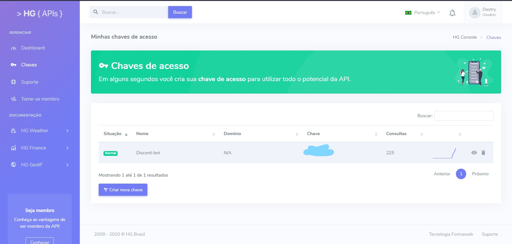
Agora vamos começar a consumir a Api, Entre no arquivo que acabamos de criar.
Agora vamos separar em partes, Primeiro vamos fazer a request na Api da seguinte forma:
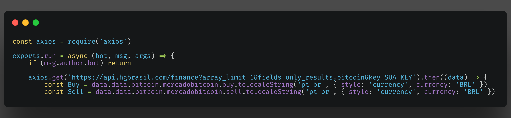
O que esse codigo faz ? Primeiro a gente pede o modulo axios.
Depois exportamos nosso arquivo como um modulo
Depois verificamos senão foi um bot que enviou a mensagem
Em seguida fazemos um Request na Api, então criamos duas contantes dentro de uma função
A primeira constate é a "Buy" é a outra é a "Sell"
As duas recebem praticamente o mesmo valor mundado apenas o final, uma .buy a outra .sell
E nessas constantes pegamos os valores do Json é logo depois convertemos para o Real
Ta Agora nos Temos Os Dados mas ainda o usuario não pode visualizar esses dados,
vamos criar um metodo para ele visualizar
Ainda no Arquivo "bitcoin.js" vamos fazer um
Embed.
E para fazer isso vamos fazer o seguinte codigo:
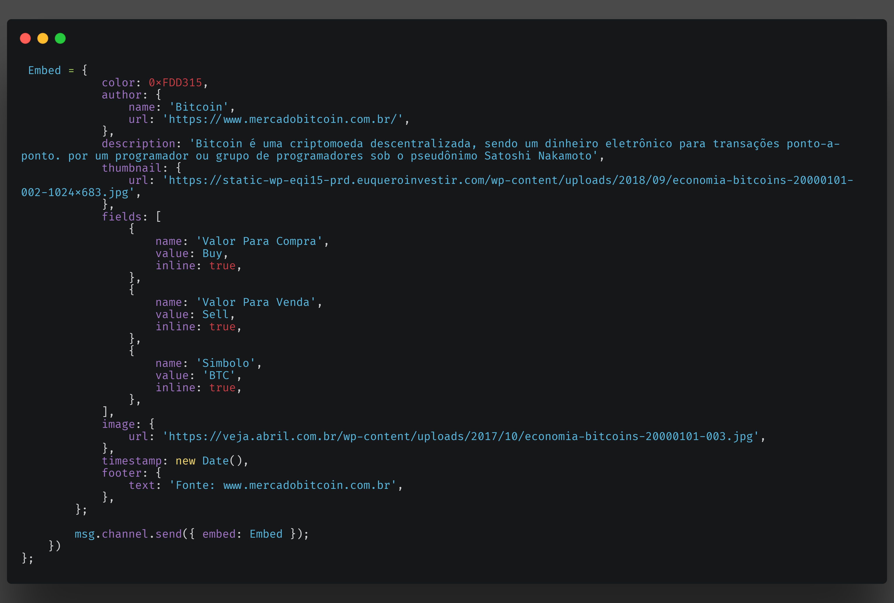
Isso e um Embed para o Discord, onde nos passamos chaves e valores.
Veja que ali em "Fields" nos passamos as duas constantes criadas anteriormente.
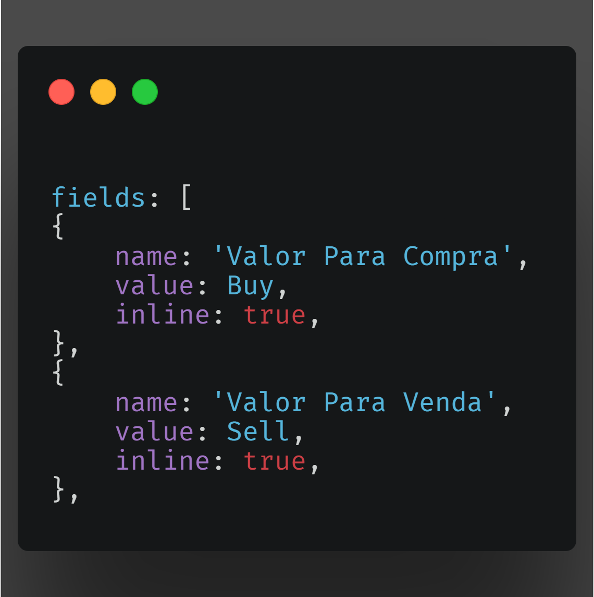
Estamos chegando ao fim Agora do nosso projeto ;(
Mas ainda não acabou então mão na massa, Bom Depois de terminamos o arquivo "bitcoin.js"
vamos agora voltar para o Index. Ja no arquivo do index vamos agora chamar nosso Command
E pra isso vamos digitar o seguinte Codigo:
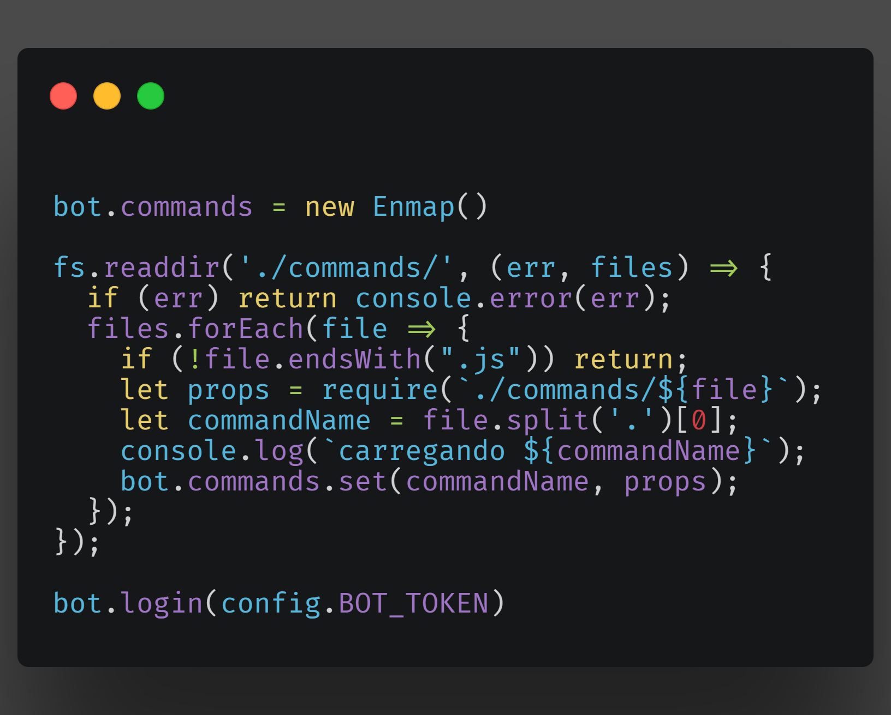
O que esse codigo faz ? Ele primeiro le o diretorio "commands"
Depois ele retorna casa aja algum erro
Depois ele verifica se o arquivo tem a extensão ".js" caso não tenha ele
retorna
Depois ele pega o arquivo e exibe o nome do arquivo no console.
Depois ele pega nosso token e faz longin na Api do Discord.
caso tudo esteja certo devera acontecer isso ao digitar *bitcoin
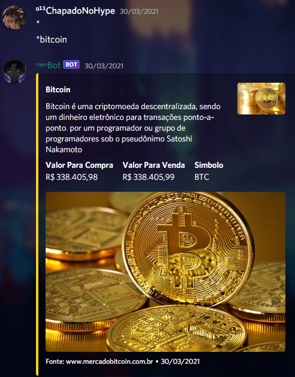